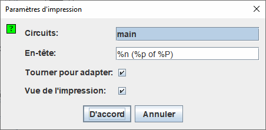

Imprimer
Lorsque vous choisissez | Imprimer ... |, Logisim affiche une boîte de dialogue permettant de configurer ce qui est imprimé.

Configuration de l'impression
- Circuits: Une liste où vous pouvez sélectionner un ou plusieurs circuits à imprimer. (Les circuits vides ne sont pas affichés comme options.) Logisim imprimera un circuit par page. Si le circuit est trop grand pour la page, l'image sera réduite pour s'adapter.
-
Entête: Texte qui devrait apparaître centré en haut de chaque page. Les substitutions suivantes seront apportées au texte.
%n Nom du circuit sur la page %p Numéro de page %P Nombre de page total %% Un seul signe de pourcentage ('%') - Faire pivoter pour s'adapter: Si cette case est cochée, lorsque le circuit est trop grand pour tenir sur la page, Logisim fera pivoter chaque circuit de 90 degrés afin de réduire le besoin de réduction de l'image.
-
Vue de l'impression: Modifie le style de l'image produite avec les informations d'état ou seulement le schéma.
nter>

Cette option est aussi disponible dans les "préférences d'application" dans l'onglet disposition. Cela modifiera l'affichage dans l'espace de travail.
Après avoir cliqué sur D'accord , Logisim affichera la boîte de dialogue standard de mise en page avant d’imprimer les circuits.